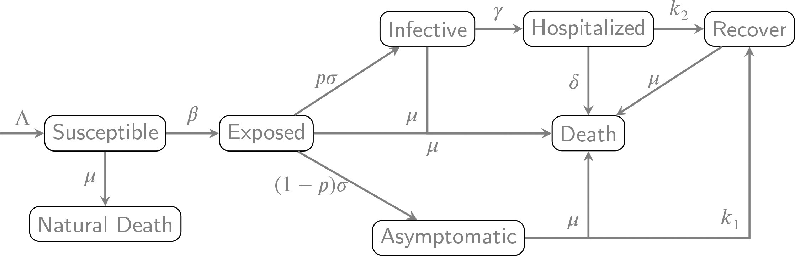

Welcome
This course will introduce you the theory and art of mathematical and statistical modeling of data from of contagious diseases epidemics using the statistical analysis package R.
The recent COVID pandemic illustrates the value of modeling epidemics. Generative (statistical) models that both describe and forecast the dynamics of an epidemic outbreak are useful for
- Forecasting for the spatial-temporal spread of contageous disease
- Evaluate/quantify the health threat to population
- Inform decision makers by forecasting future resource needs, e.g., the number of new infections and hospital beds needed
- Evaluate effectiveness of interventions
- Benefits of vaccination
- Value of non-pharmaceutical interventions, e.g., distancing, masking, restricted mobility
Set-up
This short course will combine formal lectures with real time tutorial on how to analyze data using the statistical analysis] language R. This requires that you install
install R: Download the latest version of R from the CRAN: https://cran.r-project.org/
install Rstudio: Download the latest version of Rstudio from POSIT: https://posit.co/download/rstudio-desktop/
install R-packages from the Tool -> Install Packages menu in Rstudio.
R will take care of installing all required dependencies.- learnr, tidyverse, tinytex, MASS, zoo
- bayesplot, rstantools
- deSolve
Data and code
To demonstrate and practice our analysis skills, we will use a collection epidemic data sets, scripts and examples. To access them, update the path in first chunk of code. Search for ‘PATH’
When you are ready to begin, click on!
Part 1: Introduction to Bayesian Analysis
Introduction to Bayesian Inference
Example 1: Estimation of an infection probability.
Sampling from the posterior
A first algorithm: Importance sampling
Example 2: Estimation of within household infection probability
Brute force sampling of bivariate parameters
Limitations of importance sampling
Introduction to Gibbs sampler
A first example of data augmentation
Example 3: Estimation of the basic reproductive number from total infections
Bayesian analysis for transformed Metropolis-Hasting algorithm.
Basic diagnostics
Posterior predictive distribution
Bayesian inference
In this course we will present a Bayesian approach to parameter estimation and uncertainty quantification.
Bayesian paradim
The Bayesian paradigm provides a principled framework to make inference for the unknown parameters from data and make forecast of future incidence (with associated uncertainties).
Bayesian inference is particularly useful because
Bayesian inference is conditional on the actual observations (via the likelihood) and not impacted by possible other outcome. That is, you model and make inference using the observed data.
It intrinsically quantifies the uncertainty due to finite samples (limited data issue)
Leverages the generative mechanism of the observed observations
Provides a natural framework to model missing data
For these reasons, we will in this course rely on a Bayesian approach to model epidemic data.
Basic elements of Bayesian inference
Notation
It is useful for me to introduce the following notation:
\(Z=(Z_1,\ldots,Z_n) \in {\mathbb R}^n\) vector of observations (data).
For example, the number of new infections (incidence) for each day.\(\theta \in \Theta\) denotes unknown model parameters that we want to estimate from data.
\(\Theta\) parameter set.
A likelihood \(L(\theta) = {\mathbb P}(Z=z|\theta)\), the probability density of the data \(Z=z\) given the parameter The distribution of the data given the parameter depends on the generative model for the data. The reason we call this a likelihood and not a probability, is that we treat the outcome \(Z=z\) fixed, and consider that quantity as a function of the parameter \(\theta\).
A prior distribution \({\mathbb P}(\theta)\) for the unknown parameter. Its probability density (when applicable) will be denoted by \(\pi(\theta) = {\mathbb P}(d\theta)\). The prior embodies the a priori knowledge about the parameter. That knowledge may come from expert opinions, past experiments, or a convenient description of our lack of knowledge about the parameters.
Example
A negative binomial \(Z\) is the random variable that counts the number of trials of a biased coin (probability \(p\) for heads) that are required until \(s\) heads are observed.
If \(s=3\), then
HTTHTTTH: Z=8
TTHHTH: Z=6
The probability distrtibtuion for \(Z\) is \[ {\mathbb P}[Z=k|p] = {k-1 \choose s-1} (1-p)^{z-s}p^s. \]
If we observe \(Z=7\), then the likelihood is \[ L(p) = {6 \choose 2} (1-p)^4 p^3 \]
# set value for random variable Z and size s=3
# in R, you assign values to variables with the <- or ->
Z <- 7
s <- 3
# build vector of values for p, ranging from 0 to 1
dp <- 0.001 # set increment size
p <- seq( from=dp/2, to=1,by=dp) # generates a sequence
# use dnbinom to calculate probability
loglik <- dnbinom(Z,s,p,log = TRUE) # log useful when we have small numbers
# plot the loglikelihood
plot(p, loglik, type="l", lwd=3, # type="l" draws lines, lwd= line width
xlab="p",ylab="loglikelihood")Example of prior
The parameter for the negative binomial is \(p\). A number in \([0,1]\). A prior will be any density on that interval. A conveniant choice is the Beta\((a,b)\) density that has density
\[ f(p) = \frac{\Gamma(a+b)}{\Gamma(a)\Gamma(b)} p^{a-1}(1-p)^{b-1}. \]
The function \(\Gamma(a) = \int_0^\infty x^{a-1}e^{-x} dx\) is the Gamma function.
The ration \[ \frac{\Gamma(a+b)}{\Gamma(a)\Gamma(b)} \] is the normalizing constant that ensures that \[ \int_0^1 f(p)dp = 1. \]
Any probability distribution on \([0,1]\) can be a prior.
What does it mean if the prior is \({\mathbb P}[p=0]=1\)?
Is there a prior that says “we don’t know anything about \(p\)”?
Bayes rule
The big idea of Bayesian analysis, is to take our prior knowledge (prior distribution), combined it with what we have observed (likelihood) to update our knowledge (posterior). Logically, we use the posterior distribution, the conditional distribution of the unknown parameter given the data, as our updated knlowledge.
Computationally, this is done via Bayes rule that can be writen in deceptively simple form: \[ {\mathbb P}(\theta|Z) = \frac{{\mathbb P}(Z|\theta) {\mathbb P}(\theta)}{{\mathbb P}(Z)} \]
The marginal distribution \({\mathbb P}(Z)\) of the data serves as a normalizing constant for the posterior distribution. Mathematically, iy is obtained by integrating \[ {\mathbb P}(Z) = \int_\Theta {\mathbb P}[Z|\theta] \pi(\theta) d\theta. \] Computing that constant is often challenging.
Bayesian Inference
The prior embodies the knowledge about the unknown parameter before observing the data
The posterior embodies the knowledge about the unknown parameter after observing the data
Inference are made using the posterior. The whole distribution is more informative than any summary. Yet, one can summarize attributes of the posterior distribution:
Point estimation: Mean, median, mode of the posterior distribution
Estimate uncertainty: can use variance or IQR, but better to provide the whole posterior.
Credibility intervals: use quantiles of posterior, or threshold posterior density to identify high density regions.
Predictions: We can calculate prediction for observations given the observations by \[ {\mathbb P}[X=x|Data] = \int_{\theta \in \Theta} {\mathbb P}[X=x|\theta] {\mathbb P}[d\theta|Data] \] That is, we integrate out the unknown parameter using its posterior distribution
Example 1: Estimating the probability of infection
Problem
Assume that in a population of \(N+m\) individuals, there are \(m\) infected individuals. Each day, each infected individual infects independently each susceptible individual with probability \(p\).
Given \(m=1\) infected individual, what is the probability of infection \(p\) if we observe \(Z\) new infections on the first day?
Given \(m\) infected individuals, what is the probability of infection \(p\) if we observe \(Z\) new infections on the first day?
Likelihood.
Binomial distribution
Let \(Z\) denote the number of successes (heads) in \(n\) independent toss of a biased coin showing heads with probability \(p\).
Each possible sequence of \(N\) tosses with \(Z=z\) heads occurs with probability \(p^z (1-p)^{n-z}\)
There are \({N \choose z}\) distinct sequences of heads and tails
Example: \(N=3, Z=1\)
HTT
THT
TTH
The probability that \(Z=z\) is \[ {\mathbb P}[Z=z|p] = {N \choose z} p^z (1-p)^{N-z}. \]
Escape probability
If there are \(m\) infectious individuals infecting independently each susceptible individual, the probability that a given susceptible individual escapes infection is
\[ (1-p)^m. \]
Thus, the probability that a susceptible individual gets infected is
\[ r(p) = 1 - (1-p)^m. \]
Distribution of the number of new infections
The number of new infections \(Z\)
is a binomial distribution with parameters \(N\) and \(r(p)\).
and the number of infected individuals Z$ is a binomial \(B(N,r)\): \[
{\mathbb P}(Z=z|p) = {N \choose z} r(p)^z (1-r(p))^{N-z}
\]
Likelihood
Given \(Z=z\) new infections, the likelihood is \[ L(p) = {N \choose z} r(p)^z (1-r(p))^{N-z} \]
What is the difference between the binomial probability and the likelihood?
prior
The parameter \(p\) is on \([0,1]\). Any probability distribution on that interval can be a prior distribution
Pick a prior that captures our state of knowledge about the the infection probability
Pick a prior for which it is easy to calculate the posterior distribution
The Beta\((a,b)\) is an example of a convenient family of prior distributions. They have probability density \[ \pi(p) = \frac{\Gamma(a)\Gamma(b)}{\Gamma(a+b)} p^{a-1} (1-p)^{b-1}, \] where \(a,b>0\) and \(\Gamma(a) = \int_0^\infty u^{a-1}e^{-u}du\) is the Gamma function.
Calculate \[ \mbox{mean} = \frac{1}{a+b} \qquad \mbox{var} = \frac{ab}{(a+b)(a+b+1)}. \]
Special case:
\(a=b=1\) is the uniform density on \([0,1]\)
\(a=b=1/2\) Jeffey’s prior (“not informative”)
posterior
Why is the Beta distribution convenient? For \(m=1\), the product of prior and binomial likelihood is
\[\begin{eqnarray*} L(p) \times \pi(p) & = & {N \choose z} p^z(1-p)^{N-z} \times \frac{\Gamma(a)\Gamma(b)}{\Gamma(a+b)} p^{a-1} (1-p)^{b-1}\\ & \propto & p^{z+a-1} (1-p)^{N-z+b-1} \end{eqnarray*}\]
Same functional form as the prior
Do not need to keep tract of constants. We know that the normalizing constant will be \[ {\mathbb P}[Z=z] = \frac{\Gamma(z+a)\Gamma(N-z+b)}{\Gamma(N+a+b)} \]
Why?
Prior distributions that lead to posterior distribtuions in the same family are called conjugate priors: Start with prior Beta\((a,b)\) and get posterior Beta\((A,B)\) with
\(A=a+z\)
\(B=b+N-z\)
Posterior distribution is \[ {\mathbb P}[p|Z=z] = \frac{\Gamma(N+a+b)}{\Gamma(a+z)\Gamma(N-z+b)} p^{z+a-1}(1-p)^{N-z+b-1}. \]
Numerical example
As an numerical example, consider observing \(Z=6\), when \(N=50\). Our prior is a Beta distribution with parameters \(a=2\) and \(b=3\).
See [x]beta functions to evaluate densities,
distribution and draw samples from a Beta distribution.
# set up a grid a the probability of success
pp <- seq( 0, 1, by = 0.001 )
# Data
# number of trials
N <- 50 # In R, you can use = or <- to assign values to variables
Z <- 6
# parameter of prior
a <- 2
b <- 3
# dbeta is a function that calculates the density of a beta distribution
# evaluated at values pp (can be a vector), and parameters a and b
Prior <- dbeta(pp,a,b)
# To get help about functions in R, use either
# help("dbeta")
# ?dbeta
# beta is conjugate prior for binomial. So we *KNOW* that
# the posterior is a beta with parameters a+z, b+N-z
# again, I evaluate density on a grid of values of p
Posterior <- dbeta(pp,a+Z,b+N-Z)
# Now I want to make a plot
# Useful to calculate the maximum to set axis...
mmax <- max(Prior,Posterior)
plot(c(0,1), c(0,mmax), type="n", # type="n" just sets up thje axis
xlab="prob", ylab="density") # xlab, ylab used for the labels
lines(pp,Prior,col=1,lwd=2)
lines(pp,Posterior,col=2,lwd=2)
#. calculate confidence interval
CI <- function(p,posterior,L){
idx <- posterior > L
coverage <- mean( posterior*idx )
CI <- range( p[idx] )
return( list( interval=CI, coverage=coverage ) )
}
abline(h=1,lty=3)
CI(pp,Posterior,1)Exercise.
Moddify the code to compute the posterior distribution for \(p\) when \(Z=10\), \(N=100\). Compute condidtional mean, conditional variance, and a \(0.95\) confidence interval for \(p\). For the latter, you need to guess a reasonable value for \(L\) in the above code.
Another academic example
Suppose that \(Z\) has a Poisson distribution with mean \(\theta\). Poisson distributions are useful to model count data.
Then \[ {\mathbb P}[Z=z|\theta] = \frac{\theta^z}{z!} e^{-\theta}, \quad z=0,1,2,\ldots \] The likelihood of \(\theta\) given the observation \(Z=z\) is \[ L(\theta) = \frac{\theta^z}{z!} e^{-\theta} \]
A prior of convenience (conjugate prior, as we shall see) is the gamma distribution with rate \(\tau\) and shape \(s\). The prior density is \[ \pi(\theta) = \frac{\tau^s \theta^{s-1}}{\Gamma(s)} e^{-\tau \theta}. \]
The posterior is proportional to \[ L(\theta) \pi(\theta) \propto \theta^{z+s-1} e^{-(\tau+1)\theta} \] which we recognize as a gamma density with rate \(\tau+1\) and shape \(s+z\). Hence the posterior density is
\[ P(\theta|z) = \frac{(1+\tau)^{z+s}}{\Gamma(z+s)} \theta^{z+s-1}e^{-(1+\tau)\theta}. \]
Example, continued.
Now suppose that \(m=3\). As discussed, the escape probability is \(r(p)=(1-p)^3\), and the probability of observing \(Z=z\) new infections is \[ {\mathbb P}[Z=z|p] = {N \choose z} (1-(1-p)^3)^z (1-p)^{3(N-z)}. \]
Likelihood
If we observe \(Z=z\), the likelihood is \[ L(p) = {\mathbb P}(Z=z|p) = {N \choose z} (1-(1-p)^3)^z (1-p)^{3(N-z)}. \]
Prior
As before, let us assume that \(p\) has a Beta\((a,b)\) prior. That is \[ \pi(p) = \frac{\Gamma(a+b)}{\Gamma(a)\Gamma(b)} p^{a-1} (1-p)^{b-1}. \]
Posterior
The posterior is proportional to \[\begin{eqnarray*} {\mathbb P}[p|Z=z] &\propto& (1-(1-p)^3)^z (1-p)^{3(N-z)} \times p^{a-1}(1-p)^{b-1}\\ & \propto & p^{z+a-1}(1-p)^{3(N-z)+b-1} \times \left ( 3 - 3p + p^2 \right )^z. \end{eqnarray*}\]
Not a conjugate prior
The posterior distribution is not a Beta distribution. This means that we need to calculate the integral
\[ \frac{1}{{\mathbb P}[Z=z]} = \int_0^1 p^{z+a-1}(1-p)^{3(N-z)+b-1} \times \left ( 3 - 3p + p^2 \right )^z dp \]
to normalize our expression for the posterior.
Alternative to calculation of the normalizing constant
Brute force approach
Analytic evaluation of the normalizing constant \[ \int_0^1 p^{z+a-1}(1-p)^{3(N-z)+b-1} \times \left ( 3 - 3p + p^2 \right )^z dp \] possible, but tedious.
Numerical integration is also possible.
Alternative approach
Imagine getting a sample \(p_1,\ldots,p_n\) from the posterior distribution. Almost as good as computing the posterior distribution
- Calculate estimates
- Obtain confidence intervals
- Make inference
Central theme of today’s lectures.
Getting a sample from the posterior is almost as good as direct evaluation of the posterior
Sampling from a univariate distribution
Let us digress and discuss how to sample from a univariate probability distribution.
A theorem
If \(X \sim F\) a continuous univariate cumulative probability distribution, then \[ F(X) \stackrel{d}{=} U \sim \mbox{Uniform}(0,1). \]
The converse is true even more generally: Given a cumulative probability distribution \(F\), \[ X = F^{-1}(U) \equiv \sup \{x : F(x) \leq U \} \sim F. \]
Sampling algorithm
Draw \(U\) from a uniform distribution
Calculate \(X = \sup\{ x : F(x) \leq U \}\)
Academic Example
As a first example, suppose we want to sample from an exponential distribution that has cumulative probability distribution
\[ F(x) = 1 - e^{-x} \]
The inverse of this distribtuion is \[ F^{-1}(u) = -log(1-u) \]
# number of samples
n.smp <- 10000
# create a vector of random uniform
U <- runif(n.smp)
# calculate inverse
X <- -log(1-U)
# make histogram
hist(X,xlab="x", nclass=100, freq=FALSE, # freq=FALSE makes density
main="histogram of exponental")
# add expected density
x <- seq(0,10,by=0.1) # sequence of x values
y <- exp(-x) # density at x
lines(x,y,lwd=3,col='red') # lwd width of line, col='red' sets color of line
Example, continued
Let us demonstrate how we can apply this method to (numerically) a
sample from an (approximate) distribution in the previous problem.
The approximation arises because we need to discretize \(p\).
# data
N <- 50
Z <- 8
m <- 3
# parameters for the prior
a <- 2
b <- 4
# set-up the numerical approximation by creating a grid of
# values p
dp <- 0.05 # grid size
p <- seq(dp/2, by=dp)
# calculate the probability (up to numerical integration)
P <- c(0, exp( (Z+a-1)*log(p) + (3*(N-Z)+b-1)*log(1-p) + Z*log(3-3*p+p*p) ) )
# calculate the approcimate CDF
cdf <- cumsum(P)/sum(P)
# sample from that distribution using the inverse probability transform
# You can define custom functions with the function(...) command
# The ... are the input variables (locally defined)
Finv <- function(x,cdf,u){
idx <- cdf < u # generate a vector of T-F of the same length as cdf
x.smp <- max( x[ cdf < u ] ) # select entries with T, and take the max
return(x.smp) # return result
}
n.smp <- 5000 # number of samples to be drawn
X <- rep(0,n.smp) # create vector of zeros of length n.smp
# loop to generate random samples
for ( k in 1:n.smp ){
X[k] <- Finv( p,cdf,runif(1) ) # [] are used to address component of vector
# () used for functions
}
# make a histogram of the results
# nclass = number of bins
hist(X,nclass=100,
main="histogram of posterior",
xlim=c(0,0.3)) # set range of x-axisExercise
Change the grid size in the above code and see how the posterior distribution changes
How do we select the grid size?
Discussion
What are possible shortcomings for this algorithm?
Only works in one dimension
Depends on numerical approximations.
Importance sampling
The inverse probability method works well when we can readily sample (compute) the inverse cdf of the posterior. Otherwise we need, as we have done, numerically approximate the cdf.
An alternative to that scheme is importance sampling. Assume that we can “easily” sample from a distribution \(f\). But we want to get a sample from a distribution \(g\).
Algorithm:
draw \(Z \sim f\)
calculate weight \(w(Z)=g(Z)/f(Z)\)
\((w(Z_i),Z_i),i=1,\ldots,n\) form a weighted sample from \(g\).
Justification
Calculate \[\begin{eqnarray*} {\mathbb E}_g(H(Z)) &=& \int H(z) g(z) dz \\ &=& \int H(z) \frac{g(z)}{f(z)} f(z) dz\\ &=& \int H(z) w(z) f(z) dz = {\mathbb E}_f[H(Z)w(Z)]. \end{eqnarray*}\]
A weighted sample is useful to estimate integrals.
Graphical example
Suppose that I want to draw from a density that is proportional to \[ g(z) \propto \frac{1}{1+\sqrt{z}+z} e^{-z} \] We know how to sample from an exponential distribution that has density (see previous example) \[ f(z)=e^{-z}. \] To get a weighted sample for \(g(z)\), we can sample form the exponential and assign weights \[ w(z) = \frac{g(z)}{f(z)} \propto 1+\sqrt{z}+z \]
# number of samples
n.smp <- 10000
# create a vector of random uniform
U <- runif(n.smp)
# calculate inverse
Z <- -log(1-U)
# calculate weights
W <- 1 + sqrt(Z) + Z
# normalize the weights
W <- W/sum(W)
# lets calculate a histogram using these weight
histogram.breaks <- seq(0,10,by=0.1) # breaks of the histogram
iidx <- cut(Z, histogram.breaks) # indicates in which bin each element of Z belongs
wgt.by.bin <- split(W, iidx) # split weights into associated bin
wgt.sum <- sapply( wgt.by.bin, sum ) # make sum of weights in each bin
# normalize by bin size
wgt.sum <- wgt.sum/0.1
# make barplot
plot(histogram.breaks[-1], wgt.sum,
type="h",ylim=c(0,0.6), # type="h" used to create bars
xlab="z",ylab="density")
lines(x,y,lwd=3,col=2)
The red line is the exponential density, and the barplot is the histogram of the desired density.
Numerical Example
We want to draw a weighted samples from the posterior \[ {\mathbb P}(p|Z) \propto p^{z+a-1}(1-p)^{3(N-z)+b-1} \times \left ( 3 - 3p + p^2 \right )^z. \] Recognize that \(p^{z+a-1}(1-p)^{3(N-z)+b-1}\) is proportional to a Beta\((z+a,3(N-z)+b)\) density.
Sampling weights are \[ w(p) \propto \frac{g(p)}{f(p)} = C (3-3p+p^2)^z. \]
The following R code computes an importance sample when \(m=3\), \(N=50\) and \(Z=8\).# data
N <- 50
Z <- 8
m <- 3
# parameter of prior
a <- 2
b <- 3
# number of samples
n.smp <- 10000
# get a sample from a Beta distribution
pp <- rbeta(n.smp, Z+a, m*(N-Z)+b)
# calculate the logarithm of the weights
ww.log <- Z*( log(1-(1-pp)^m ) - log( pp ) )
ww.log <- ww.log - mean( ww.log ) - log(n.smp) # get better numerical stability is values do not explode
# normalize weights
ww.normalized <- exp( ww.log - log( sum( exp( ww.log ) ) ) )
# plot weights
plot(ww.normalized, xlab="index", ylab="weight", pch=20, cex=0.5)
abline(h=0.001, lty=1, lwd=3)
#. Lets calculate the histogram
nbins <- 200 # number of bins
histogram.breaks <- seq(0,0.5,length=nbins+1)
iidx <- cut( pp, histogram.breaks )
split( ww.normalized, iidx ) %>%
sapply(., sum) -> histogram.hight
histogram.hight <- histogram.hight * nbins # normalization
plot(histogram.breaks[-(nbins+1)],histogram.hight,type="s",
xlab="probability",ylab="histogram",
sub="histogram of posterior distribution")Inference
We can readily use the weighted samples to calculate summary statistics of the posterior distribution.
# sort sampled values
idx <- sort.list(pp)
pp.sort <- pp[idx]
ww.normalized.sort <- ww.normalized[idx]
# cumulative distribution
pp.cdf <- cumsum(ww.normalized.sort)
# summary statistics of the posterior
sum.stat <- list(
mean=sum(ww.normalized.sort*pp.sort), # mean
q10=max( pp.sort[ pp.cdf < 0.1] ), # lower 10% quantile
q50=max( pp.sort[ pp.cdf < 0.5] ), # median
q90=max( pp.sort[ pp.cdf < 0.9] ) ) # upper 10% quantile
sapply(sum.stat, round,4)Exercise
Use the previous code and explore sampling the posterior when \(m=30\), \(Z=80\) and \(N=500\). What is happening with the weights?
Consider the problem of estimating the posterior distribution when \(m=1\) (one infected individuals), \(Z=6\) and \(N=50\). But assume that the prior is proportional to a Gaussian with mean \(2/5\) and variance \(1/5\), restricted to the unit interval.
Guided Exercise
Crimea Congo Hemorrhagic Virus (CCHV) is a tick-born virus that has up to 50% mortality in humans infections. Limited resources encourages, and relatively low prevalence in ticks, encourages batch detection of viruses by using PCR on a small number of ticks instead of individual ticks. Apply the methods discussed in this section to estimate the prevalence CCHV in ticks on the ground.
Define random variables
\(Z_i = 1\) is ticks on \(i^{th}\) cow test positive
\(m_i\) the number of ticks test on the cow
Data from each cow are independent
Probability
The probability of a positive test is: \[ {\mathbb P}[Z_i=1|m_i,p] = 1 - (1-p)^{m_i} \qquad {\mathbb P}[Z_i|m_i,p]=(1-p)^{m_i} \]
Likelihood
The likelihood of the data is \[\begin{eqnarray*} L(p) &=& \prod_{i=1}^n ( 1 - (1-p)^m_i )^{Z_i} (1-p)^{m_i(1-Z_i)}\\ &=& \prod_{i \in M_1} p^{Z_i}(1-p)^{Z_i} \times \prod_{i \in M_2} (1-(1-p)^2)^{Z_i} (1-p)^{2(1-Z_i)} \\ &=& p^{\sum_{i=1}^n Z_i} (1-p)^{m_i(1-Z_i)} \times (2-p)^{\sum_{i \in M_2} Z_i}. \end{eqnarray*}\] Here \(M_1\) and \(M_2\) are the set of indices for which \(m_i=1\), \(m_i=2\), respectively.
Importance sampling from posterior
Use a uniform prior for \(p\).
Set \(T_1 = \sum_{i=1}^n Z_i\), \(T_2=\sum_{i=1}^n m_i(1-Z_i)\) and \(T_3=\sum_{i \in M_2} Z_i\). Then the posterior is proportional to \[ {\mathbb P}[p|Data] \propto p^{T_1} (1-p)^{T_2} \times (2-p)^{T_3}. \] We can sample from a Beta\((T_1+1,T_2+1)\), and weight the samples with weights proportional to \[ W_i = W(p_i) \propto (2-p_i)^{T_3}. \]
If you need help, load the file tickAnalysis.R and
complete analysis.
Using a different prior?
Suppose that you are told that they expect between 10% and 30% of the ticks to be infected. How would you use this information to select a prior?
Answer
We calsulate the posterior distribution to be:

Importance sampling. Summary
Importance sampling is a useful tool to generated weighted independent samples from a posterior distribution. This approach is useful when
One can identify a distribution to sample from, whose density \(f\) is close to the posterior density \(g\)
The calculated weights should not be dominated by a few large outliers
Weighted samples useful to compute expected values, including histograms.
Generally speaking, works for univariate problems.
Example 2: Estimating the probability of transmission in households
Problem
Contacts leading to infection can be heterogeneous. For example, we may believe that the risk of infection from a random encounter on the street is less than getting infected by a sick household member. Household infection studies provide an opportunity to study disease transmission in a more homogeneous setting.
Consider the following household study: We sample \(n\) households, for which we record the pair \((N_i,Z_i)\) of household size and number of infections. Our analysis will make the following assumptions:
Infections within the household occur independently with probability \(p\).
The household is observed during a short period of time that practically eliminates secondary infections
An attempt is made to creat an index case in each household by attempting to infect a particular individual in that hlusehold. The probability of that infection is q.
The number of secondary infections within the household
Our aim is to estimate \(p\). The fraction \(q\) of households with an initial infection is an unknown “nuissance” parameter that we also need to estimate.
Modeling
Distribution of the data
To model the number of infections \(Z\) in a given household, decompose the probability into two steps:
Infect the index case in a household. Lets call that random variable \(A\), with \(A=1\) when an infection is successful. By assumption, \({\mathbb P}[A=1]=q\)
If \(A=0\), there can be no infections, and so \(Z=0\)
If \(A=1\), then the number of infections in the household is a binomial with parameter \(p,N\).
Using the total probability rule, we have that \[\begin{eqnarray*} {\mathbb P}[Z=z|N=n,p,q] &=& {\mathbb P}[Z=z|A=1,N=n,p,q] {\mathbb P}[A=1|q]\\ && \qquad + {\mathbb P}[Z=z|A=0,N=n,p,q] {\mathbb P}[A=0|q]\\ &=& \left \{ \begin{array}{ll} (1-q) + q(1-p)^{n-1} & k = 0 \\ q {n-1 \choose k} p^k (1-p)^{n-1-k} & k =1,2,\ldots,n-1 \end{array} \right . \end{eqnarray*}\]
That distribution is called a ‘zero inflated binomial’ distribution, and such random variables arise sometimes in epidemiology. It is called zero inflated because it has more zero’s than we would expect under the standard binomial model.
Likelihood
Assuming households are independent, the likelihood is the product of the probabilities \[\begin{eqnarray*} L(p,q) &\propto& \prod_{i: z_i=0} \left ( (1-q) + q(1-p)^{N_i-1}\right ) \times \prod_{i : z_i > 0} q p^{z_i}(1-p)^{N_i-z_i-1} \end{eqnarray*}\] If we denote by \(\xi_i=\{Z_i=0\}\) the indicator that \(Z_i=0\), then we rewrite the likelihood as \[\begin{eqnarray} \label{eq:A} L(p,q) &\propto& \prod_{i=1}^n q^{1-\xi_i} \left ( (1-q) + q(1-p)^{N_i-1}\right )^{\xi_i} \times \prod_{i=1}^n p^{z_i(1-\xi_i)}(1-p)^{(N_i-z_i-1)(1-\xi_i)} \end{eqnarray}\]
prior
We will assume that our prior knowledge for the fraction \(q\) of household infected is independent of the prior for the probability of secondary infections \(p\). For convenience, I assume these prior distributions are Beta with parameters \((a_q,b_q)\) and \((a_p,b_p)\), respectively. The choice \(a_p=b_p=1\) corresponds to a uniform density on the unit interval, but other more informed choices are possible.
sampling from the posterior distribution
Formally, the posterior distribution is proportional to the product of the likelihood and the prior. Sampling from a multivariate distribution is only slightly more complicated than sampling from a univariate distribution. If we write the joint density using the chain rule \[ f(p,q) = f(q|p) f(p) \] we realize that we can simulate from the joint distribution as follows:
Draw \(p \sim f(p)\)
Given \(p\), draw \(q\)
Pedagogical example
Let us consider the following example: We are told that \(X\) has a Poisson distribution with parameter \(\mu=50\) and, \(Y|X\) is a Binomial with parameter \(X\) and \(p=1/2\). We want to sample from the joint distribution of \((X,Y)\).
This problem is already set-up as we need.
# sample size
n.smp <- 50000
# draw X from the desired Poisson
mu <- 50
X <- rpois(n.smp, mu)
# draw Y form the conditional distribtuion
p <- 1/2
Y <- rbinom(n.smp,X,p)
# get joint contingency table
T <- table(X,Y)
# make a heatplot
image(as.numeric(rownames(T)), as.numeric(colnames(T)), T,
xlab="X", ylab="Y")Example, continued
This strategy works well if we can readily decompose the likelihood into a marginal and conditional. In our example, this requires a little bit of work…
Let us write \(T_1 = \sum_{i=1}^n Z_i(1-\xi_i)\) and \(T_2= \sum_{i=1}^n (N_i-1-Z_i)(1-\xi_i)\). Then the the posterior is proportional to \[\begin{eqnarray*} {\mathbb P}[p,q|Data] &\propto& \prod_{i=1}^n q^{1-\xi_i} \left ( q (1-p)^{N_i-1} + (1-q) \right )^{\xi_i} \times p^{T_1} (1-p)^{T_2}. \end{eqnarray*}\] Let us denote by \[ f(q|p) = C(p) \prod_{i=1}^n q^{1-\xi_i} \left ( q (1-p)^{N_i-1} + (1-q) \right )^{\xi_i} \] the conditional density of \(q\) given \(p\). The normalizing constant is \[ C(p)^{-1} = \int_0^1 \prod_{i=1}^n q^{1-\xi_i} \left ( q (1-p)^{N_i-1} + (1-q) \right )^{\xi_i} dq, \] so that the marginal density for \(p\) is \[ f(p) \propto \frac{ p^{T_1} (1-p)^{T_2}. }{C(p)}. \]
Remark
We see that the marginal was not \(p^{T_1}(1-p)^{T_2}\), as it also includes the normalizing constant \(C(p)\) that was not obvious when we started out. So be careful!
Importance sampling from the postrior
To sample from the posterior, we can use importance sampling to sample from the posterior distribution of \(p\) and sample from the conditional distribution of \(q\) given \(p\) using “inverse probability sampling”. The latter requires numerical evaluation of the normalizing constant that is needed for the weights for the prior.
Just to be explicit, we sample \(p\) from a Beta with parameter \(T_1+1\) and \(T_2+1\), and weight the sample according to the integral \[ w(p) = \int_0^1 \prod_{i=1}^n q^{1-\xi_i} \left ( q (1-p)^{N_i-1} + (1-q) \right )^{\xi_i} dq. \] Samples for \(q\) are drawn \(f(q|p)\).
# generate synthetic data
# set the parameters for simulating the data
p <- 0.15
q <- 0.4
n <- 40
# generate the sample, using the auxiliary variables A
N <- sample(seq(2,6,by=1),n,replace=TRUE)
A <- rbinom(n,1,q)
Z <- rep(0,n)
for ( k in 1:n ){
if ( A[k] == 1 ) Z[k] <- rbinom(1,N[k]-1,p)
}
# sample size
n.smp <- 1000
# summary statistics
xi <- Z == 0
T1 <- sum(Z*(1-xi))
T2 <- sum((N-1-Z)*(1-xi))
# assume a uniform prior
# draw from the marginal distribution of p: A beta T1+1,T2+1
# see help for how Beta parameters are specified
pp <- rbeta(n.smp, T1+1,T2+1)
qq <- rep(0,n.smp)
wgt <- rep(0,n.smp)
# make grid to evaluate (log) probability for q given p
qx <- seq(0.0005,1,by=0.001)
# calculate
for ( j in 1:length(pp) ){
vv <- exp( (N-1) * log( 1-pp[j] ) )
lq <- rep( 0, length(qx) )
for ( k in 1:n ){
lq <- lq + (1-xi[k])*log(qx) + xi[k]*log( qx * vv[k] + (1-qx) )
}
# calculate the weights
Cp <- sum( exp(lq ) )
q.dist <- cumsum( exp(lq) )/Cp
qq[j] <- qx[ max( which( q.dist < runif(1) ) ) ]
wgt[j] <- Cp
}
wgt <- wgt/sum(wgt)
# plot(wgt,xlab="index",ylab="weight",log="y")
ww <- wgt/max(wgt)
plot(pp,qq,pch=20,cex=sqrt(ww),xlab="p",ylab="q")
abline(v=p,lty=3)
abline(h=q,lty=3)
This sampling approach is problematic.
Why?
Only a few samples have larger weights, and these observations dominate the sample.
Question: Why did I plot cex=sqrt(wgt)?
Why?
Summary
Sampling from multivariate using the chain rule is possible but can be challenging.
- Computation of marginals and conditionals not always easy
Likelihood not always easy to compute
Importance sampling only works if we can easily sample from a distribution that is close from the target
- Heterogeneous weights, with a few large ones dominating, is a sign that the importance sample is problematic.
We need additional sampling tools to resolve these issues
Introduction to Markov Chains
Let us pause to present a primer on Markov chains.
Markov chains provide a useful model to describe stochastic processes, i.e., sequence of random variable that evolve in time. The chain rule in probability theory says that the joint distribtuion of a sequence of random variables \(Z_1,Z_2,Z_3,\ldots,Z_n\) is \[\begin{eqnarray*} {\mathbb P}[Z_1,\ldots,Z_n] &=& {\mathbb P}[Z_1]{\mathbb P}[Z_2|Z_1] {\mathbb P}[Z_3|Z_1,Z_2] \dots P[Z_n|Z_1,Z_2,\ldots,Z_{n-1}]. \end{eqnarray*}\] A Markov chain simplifies the above to \[ {\mathbb P}[Z_k|Z_{k-1},Z_{k-2},\ldots,Z_1] = {\mathbb P}[Z_k|Z_{k-1}]. \] Then \[ {\mathbb P}[Z_1,\ldots,Z_n] = {\mathbb P}[Z_1]{\mathbb P}[Z_2|Z_1] \dots {\mathbb P}[Z_n|Z_{n-1}]. \]
In words: The current state of the process given its full past only depends on the last state.
Fancy way to state Markov property
The past and the future are conditionally independent given the present.
Examples of Markov chains
Card shuffling
Random walks (stock market?)
Some stochastic epidemic models
Birth-Death process
Gambler’s ruin
Other examples ….
Useful properties of Markov chains
- Simplest description of dependent random variables evolving in time
Assumptions
The you can reach every state regardless of where you started
There are no periodic cycles
Important properties:
The distribution of \(Z_n\) converges to the same distribution (as \(n\) grows to infinity) regardless of the initial state
The strength of the dependence between \(Z_{n+k}\) and \(Z_n\) decreases as \(k\) increases
We say that the chain converges to mean that the distribution of \(Z_n\) converges
Academic example
Consider a Markov chain with transition probability matrix \[ P_{ij} = \left ( {\mathbb P}[Z_2=j|Z_1=i ] \right ) = \left ( \begin{array}{cccccc} & 1 & 2 & 3 & 4 & 5 \\ 1 & 0.1 & 0.8 & 0.1 & 0.0 & 0.0 \\ 2 & 0.1 & 0.2 & 0.5 & 0.2 & 0.0 \\ 3 & 0.0 & 0.1 & 0.2 & 0.4 & 0.3 \\ 4 & 0.0 & 0.0 & 0.2 & 0.3 & 0.5 \\ 5 & 0.2 & 0.0 & 0.1 & 0.7 & 0.0 \end{array} \right ) \]
Note
each row sums to one. Why?
the chain has no periodic cycles
every state can be reached from any starting value
# build transition matrix
P <- matrix( c(.1,.8,.1,0,0,.1,.2,.5,.2,0,0,.1,.2,.4,.3,0,0,.2,.3,.5,.2,0,.1,.7,0),
5,5,byrow=TRUE)
states <- as.character(1:5)
colnames(P) <- states
rownames(P) <- states
P
# each row sums to one
apply(P,1,sum)
# example of realizations
n.smp <- 10000
Z <- rep("",n.smp)
# initialize the chain. Start in state 3
Z[1] <- "3"
for ( k in 2:n.smp ){
Z[k] <- sample(states,1,prob=P[Z[k-1],]) # sample function
}
# long run frequency
table(Z)/n.smp
plot( as.numeric(Z)[1:100], # select a subset of the chain (first 100 elements)
xlab="index", ylab="state",
pch=20, cex=0.5, type="b") # type="b" plots both points and linesUse the above code to change the initial value. Comment out lines that show P and the rowsum of P.
Comment on the relative frequencies.
Academic example: Gambler’s ruin
Two players play repeatedly a game. Player 1 wins with probability
\(p\) each game, Player 2 wins with
probability \(1-p\).
They bet a dollar each game. Player 1 starts with A dollars, Player 2
has B dollars. The game ends when either player runs out of money.
# example of gambler's ruin
n.smp <- 150
Z <- rep(0,n.smp)
Z[1] <- 10 # initial value
Tot <- 20 # total wealth of both players
p <- 0.5 # prob that player 1 wins
# random walk with biased coin. Stop when either
# player runs out of money
for ( k in 2:n.smp ){
if ( Z[k-1] == 0 ) {
Z[k] <- 0
} else {
if ( Z[k-1] == Tot ){
Z[k] <- Tot
} else {
Z[k] <- Z[k-1] + 2*((runif(1) < p )-0.5)
}
}
}
ZRun the example a few times.
Question:
- Is this a Markov chain?
- What is the long term behavior of this process? Discuss convergence.
Convergence of Markov chains
Lets modify the chain in our first example by mixing it with the identity \[ P_2 = (1-a) P + a I \] where \(a \in (0,1)\). What do you think is the effect of that mixture?
# build transition matrix
P <- matrix( c(.1,.8,.1,0,0,.1,.2,.5,.2,0,0,.1,.2,.4,.3,0,0,.2,.3,.5,.2,0,.1,.7,0),
5,5,byrow=TRUE)
states <- as.character(1:5)
colnames(P) <- states
rownames(P) <- states
aa <- 0.5 # mixture fraction
P2 <- (1-aa)*P + aa*diag(5) # diag(5) is the identity matrix
# example of realizations
n.smp <- 10000
Z <- rep("",n.smp)
# initialize the chain. Start in state 3
Z[1] <- "3"
for ( k in 2:n.smp ){
Z[k] <- sample(states,1,prob=P2[Z[k-1],]) # sample function
}
plot( as.numeric(Z)[1:300], # select a subset of the chain (first 100 elements)
xlab="index", ylab="state",
pch=20, cex=0.5, type="b") # type="b" plots both points and lines
# long run frequency
table(Z)/n.smpQuestions:
Does the chain converge?
If so, to what distribution? Is it the same distribtuion regardless of \(a\)?
Is convergence slower? Discussion.
Example: A stochastic SIS model
Susceptible-Infected-Susceptible models are useful to understanding endemic persistent diseases. We can write a simple SIS model as follows: Let \(N\) denote the population size, which will remain constant. \(Z_k\) will denote the number of infected individuals in time period \(k\). In each time step, each infected individual can infect susceptible individuals with common probability of infection \(p\), and each infected individual recovers independently in each time step with probability.
This model is readily described using two auxilliary random variables: \[\begin{eqnarray*} V_k|Z_k &=& Bin(Z_k,q)\\ U_k|Z_k &=& Bin(N-Z_k,1-(1-p)^{Z_k})\\ Z_{k+1} &=& Z_k + U_k - V_k. \end{eqnarray*}\]
The sequence \(Z_1,Z_2,\ldots\) forms a Markov chain.
Why?
What is the stationary distribution?
# set-up
Npop <- 100 # population size
p0 <- 0.003 # infection probability
q <- 0.2 # recovery probability
n.times <- 1000 # length of simulation
Z <- rep(0,n.times)
Z[1] <- 10 # initial number of infections
# run markov chain
for ( k in 2:n.times ){
pp <- 1 - exp( Z[k-1]*log(1-p0))
U <- rbinom(1,Npop-Z[k-1],pp)
V <- rbinom(1,Z[k-1],q)
Z[k] <- Z[k-1] + U - V
}
plot(Z,xlab="time",ylab="# infected",sub="SIS",
pch=20,cex=0.75)Exercise
Modify the code to gain insight into the impact of changing the probability of infection ’‘’p0’‘, the probability of recovery ’q’, and the populatiuon size ‘Npop’.
Discuss how the behavior of the chain depensd on these quantities.
Gibbs sampler
Gibbs was a physicist (at Yale), late 1800. He developed a method to sample from spin glass models. His approach generalizes for sampling from joint distribtuions of random variables.
Algorithm
Let \(f(x_1,x_2)\) denote the joint density of two random variables \((X_1,X_2)\). Let \(f_{12}(x_1|x_2)\) and \(f_{21}(x_2|x_1)\) denote the conditional densities of \(X_1\) given \(X_2\), and of \(X_2\) given \(X_1\). And denote by \(f_1(x_1)\) and \(f_2(x_2)\) the marginal densities of \(X_1\) and \(X_2\), respectively.
Algorithm
Initialize \((x_1^{(0)},x_2^{(0)})\).
For \(k=1,2,\ldots\)
Draw \(x_1^{(k)} \sim f_{12}(\cdot | x_2^{(k-1)})\)
Draw \(x_2^{(k)} \sim f_{21}(\cdot| x_1^{(k)})\)
For \(k\) large enough, the sampled pair \((x_1^{(k)},x_2^{(k)})\) have (approximate) joint distribution \(f(x_1,x_2)\).
Remarks
The algorithm constructs a Markov chain \((X_1^{(k)},X_2^{(k)})\)
Algorithm readily extends to any multivariate distribution
If it is asy to sample from \(f_1(x_1)\) and \(f_{21}(x_2|x_1)\), then can directly sample from joint distribution — no need for Gibbs sampler
The Gibbs sampler is useful if the conditional densities/conditional distributions are easy to calculate and sample from.
A little theory
The sequence \(\{(X_1^{(k)},X_2^{(k)}), k=1,2,\ldots\}\) forms a Markov chain with transition probability to go from \(x=(x_1,x_2)\) to \(y=(y_1,y_2)\) given by \[ k(y|x) = f_{21}(y_2|y_1)f_{12}(y_1|x_2). \]
The join density \(f(x_1,x_2)\) is a stationary distribution for that transition.
Heuristic proof
All we need to show is that \[ I = \int_{{\mathbb R}^2} k((y_1,y_2)|(x_1,x_2)) f(x_1,x_2) dx_1dx_2 = f(y_1,y_2). \] We have that \[\begin{eqnarray*} I &=& f_{21}(y_2|y_1) \int_{x_2} f_{12}(y_1|x_2) \int_{x_1} f(x_1,x_2) dx_1 dx_2\\ &=& f_{21}(y_2|y_1) \int_{x_2} f_{12}(y_1|x_2) f_2(x_2) dx_2 \\ &=& f_{21}(y_2|y_1) f_{1}(y_1)\\ &=& f(y_1,y_2). \end{eqnarray*}\]
A more formal proof puts assumptions that ensures that the Markov chain is such that every possible state is reachable from any initial state.
Academic example: Ising model
We have particles placed on a regular \(N \times N\) grid. Each particle points up or down. That is, at each grid point, we have random variables \(Z_{ij} \in \{-1,+1\}\). The distribution of these random variables are determined by the conditional distributions [ {P}[Z_{ij}=1 | Z_{-(i,j)}] ( {(k,) (i,j)} Z{k} ) {P}[Z_{ij}=-1 | Z_{-(i,j)}] ( - {(k,) (i,j)} Z{k} )
] where \((k,\ell) \sim (i,j)\) if they are neighbors on grid. To avoid edge effects, we will connect the top and bottom, and the left and right edges.
## Error in dim(robj) <- c(dX, dY): attempt to set an attribute on NULL
This is the problem that Gibbs considered
N <- 20 # size of grid
Z <- matrix(1,N,N) # grid of random variables, initalized to one
index.p1 <- c(2:N,1) # index shifted to the right
index.n1 <- c(N,1:(N-1)) # index shfted to the left
n.sim <- 500 # number of steps in the Gibbs sampler
theta <- 0.75
# sampling from the conditionals
for ( K in 1:n.sim ){
for ( k in 1:N ){
for ( j in 1:N ){
S <- sum( Z[k,c(index.p1[j],index.n1[j])] ) +
sum( Z[c(index.n1[k],index.p1[k]),j])
P <- exp(theta*S)/(1+exp(theta*S))
Z[k,j] <- 2*((runif(1) < P)-0.5)
}
}
}
image(1:N, 1:N, Z)If you set \(\theta=0\), then each random variable \(Z_{ij}\) is independent, with probability \({\mathbb P}[Z_{ij}=1]=0.5\). A positive value of \(\theta\) encourages positive dependence, a negative value leads to negative dependence.
This model can be used to describe the spatial distribution of plants.
Example 2, continued
conditional densities
We can apply the Gibbs sampler to build a Markov chain to generate draws from the posterior distribution. Let me denote by \(\xi_i = {\mathbb I}(Z_i=0)\), the indicator that we observe zero secondary infections. Then conditional distribution of \(q\) given \(p\) and the data is \[ h(q|p) \propto \prod_{i=1}^n q^{1-\xi_i} \left ( q (1-p)^{N_i-1} + (1-q) \right )^{\xi_i}, \] and the conditional density of \(p\) given \(q\) and the data is \[ g(p|q) \propto \prod_{i=1}^n \left ( q (1-p)^{N_i-1} + (1-q) \right )^{\xi_i} \times p^{T_1} (1-p)^{T_2}. \]
We can sample from both of these conditional distribution using brute force. But there is simpler (and instructive way) to sample.
How to simulate this data
It is instructive to take a step back and ask ourselves how to generate the data. From the description of the data:
For each household \(i\), generate a 0-1 random variable \(A_i\), where \(A_i=1\) with probability \(q\). That variable indicates if household \(i\) contains an infectious index case.
If \(A_i=1\), generate a Binomial random variable \(Z_i\) with size \(N_i-1\) and probability \(p\). That random variable represents the number of secondary infections.
Missing observations
Our data does not include the indicators \(A_1,\ldots,A_n\). We can consider that we are missing that information. The strength of a Bayesian analysis is that we can model the generative process (see above). Such a model has unknowns the vector of random variables \((p,q,A_1,\ldots,A_n)\).
Let us explore writing the conditional distributions of each individual random variable given the others and the data:
\[\begin{eqnarray*} q | p, A_1,\ldots, A_n, \mbox{ Data } &\sim& q^{\sum_{i=1}^n A_i} (1-q)^{n-\sum_{i=1}^n (1-A_i)}\\ &\sim& \mbox{Beta} \left (1+\sum_{i=1}^n A_i, n+1-\sum_{i=1}^n A_i \right )\\ p | q, A_1,\ldots, A_n, \mbox{ Data } &\sim& \prod_{i : A_i=1 } {N_i -1 \choose z_i} p^{z_i} (1-p)^{N_i-1-z_i}\\ &\sim& \mbox{Beta} \left (1+\sum_{i=1}^n A_iz_i, 1+\sum_{i=1}^n A_i(N_i-z_i-1) \right ) \end{eqnarray*}\] and \[ {\mathbb P}[A_i=1 | A^{-i}, p ,q, \mbox{ Data }] = \left \{ \begin{array}{ll} 1 & z_i > 0 \\ \frac{q(1-p)^{N_i-1}}{((1-q)+q(1-p)^{N_i-1}} & z_i=0 \end{array} \right . \]
These conditional distributions are easy to sample from. So let us use the Gibbs sampler to draw from our extended set of random variables.
Numerical Example
# generate synthetic data
# set the parameters for simulating the data
p <- 0.15
q <- 0.4
n <- 40
# generate the sample, using the auxiliary variables A
N <- sample(seq(2,6,by=1),n,replace=TRUE)
A <- rbinom(n,1,q)
Z <- rep(0,n)
for ( k in 1:n ){
if ( A[k] == 1 ) Z[k] <- rbinom(1,N[k]-1,p)
}
# Initialize Gibbs sampler
niter <- 5000
pp <- rep(0,niter)
qq <- rep(0,niter)
AA <- matrix(0,niter,n)
pp[1] <- 0.5
qq[1] <- 0.5
AA[1,] <- sample(c(0,1),n,replace = TRUE)
for ( k in 2:niter ){
# conditional on p and q and the probability A_i=1 is
rA <- Z > 0
for ( j in 1:n ){
if ( Z[j] == 0 ){
p.num <- qq[k-1]*exp( (N[j]-1)*log(1-pp[k-1]) )
p.dem <- p.num + (1-qq[k-1])
pA <- p.num/p.dem
rA[j] <- runif(1) < pA
}
}
AA[k,] <- rA
# draw Beta for q
aa <- sum(AA[k,])+1
bb <- n-sum(AA[k,])+1
qq[k] <- rbeta(1,aa,bb)
# draw Beta for p
aa <- sum(AA[k,]*Z) + 1
bb <- sum(AA[k,]*(N-1-Z)) + 1
pp[k] <- rbeta(1,aa,bb)
}
hist(pp,nclass=100,xlim=c(0,1),
sub="histogram of infection probability",
xlab="probability",
main="")
abline(v=p,lwd=2,col=2)
hist(qq,nclass=100,xlim=c(0,1),
sub="histogram of household with index",
xlab="probability",
main="")
abline(v=q,lwd=2,col=2)
jd <- kde2d(pp,qq,n=100)
contour(jd,xlab="p",ylab="q",
lwd=2, nlevels = 15,
sub="joint posterior distribtuion",
col=hcl.colors(15, "Spectral"))
points(pp[(niter-4000):niter],qq[(niter-4000):niter],pch=20,cex=0.3)Lesson learned
An important feature of Bayesian analysis, is that we can model the data generation process.
Our analysis can introduce and exploit random variables associated with the data generation process but that are not directly observed. We call this technique Data Augmentation
The Gibbs sampler generates a Markov chain for all the random variables.
Marginalization over the augmented random variables is done by dropping these variable.Posterior distributions are not always tight. This happens if the data does not constrain well the parameter (think process associated with the parameter).
Can compute/visualize joint posterior distributions
Downside: we need to have easy to sample conditional distributions. This may require user time to derive them. So this method is not turn key and requires some mathematical skills.
Open questions
We generate a Markov chain to sample the posterior distribuion.
How fast does the Markov chain converge?
Consecutive draws are correlated. Does that matter?
Example 3: Post-epidemic estimation of the basic reproductive number
Basic reproductive number
The basic reproductive number \(\varrho_0\) is a useful characterization of an epidemic. Formally it is defined as
The basic reproductive number is the expected number of secondary cases associated with an idex case in a fully susceptible population
If the basic reproductive number is larger than one, the outbreak has non-zero epidemic potential. If it is less than one, the outbreak will die out.
For the SIR models, the basic reproductive number is \[ R_0 = \frac{\beta}{\gamma} \]
How can we estimate that parameter from disease incidence outbreak data?
Disease incidence data
Consider daily incidence data from five Maryland counties during the 1918 influenza (Spanish flu) pandemic.
Disease incidence is the number of new infections per unit of time. For example, the daily number of new infections during an outbreak.

## incidence population
## Baltimore 7489 74817
## Cumberland 2085 29837
## Lonaconing 1093 7000
## Frederick 750 11066
## Salisbury 765 7553Total fraction infected
As a first example of a Bayesian MCMC analysis, let us model the total number of infected individuals in each county.
Algebraic manipulations of the SIR differential equations and their solutions reveals that the fraction of infected individuals at the conclusion of an outbreak is \(N \pi\), with the fraction \(\pi\) satisfying the implicit equation
\[ \pi = 1 - \exp( -R_0 \pi ), \]
where \(R_0 = \beta/\gamma\) is the basic reproductive number. Reference: @Miller2012.
A probabilistic derivation
The fraction infected can be interpreted as the probability that a randomly selected individual will become infected. To derive that probability, assume that
Every individual is equally likely to be infected
The expected number of infections from the index case is \(R_0\)
The fraction of infections at the end of an outbreak \(X/N \approx \pi\).
Let \(u\) be a particular individual subjected to, but not driving the epidemic outbreak. The probability that it becomes infected from a particular infected individual \(i\) is \[ {\mathbb P}[u \mbox{ infected by } i] = p. \] The number of infections \(Z\) attributable to \(i\) (when \(i\) is the index case) is a Binomial\((N,p)\), and by definition \[ {\mathbb E}[Z] = Np = R_0. \] This implies that \(p=R_0/N\).
The probability that individual \(u\) is infected during the outbreak is \[\begin{eqnarray*} \pi &=& {\mathbb P}[Bin(X,p) > 0]\\ &\approx& 1 - \exp(-X p) = 1 - \exp \left ( -\frac{X R_0}{N} \right )\\ &\approx& 1 - \exp(-\pi R_0). \end{eqnarray*}\]
The approximations become equality when the population size \(N\) tends to infinity.
A model for the total number of infected
We can we estimate the basic reproductive number \(R_0\) by estimating the fraction infected, and solving the implicit equation \[ \pi = 1-exp(-R_0 \pi). \]
Since the solution is unique, we can parametrize \(\pi=\pi(R_0)\). Bayesian inference allows us to make inference on \(R_0\).
Our derivation reveals that the total expected number of infections is \[ {\mathbb E}[X] = N \pi. \] We posit that the distribution of the total number infected \(X\) is a negative binomial with parameters \((s,q)\), a convenient model for overdispersed Poisson.
The negative binomial has probability mass function \[ {\mathbb P}[X=k] = {k+s-1 \choose r-1} (1-q)^k q^s \qquad k=0,1,2,\ldots \]
We can use expressions for the expectation and variance to fix the parameters \(s,q\): \[ {\mathbb E}[X] = s \frac{1-q}{q} \mbox{ and } V(X) = s \frac{(1-q)}{q^2} \geq {\mathbb E}[X]. \]
The R [x]nbinom function can be called with parameters
the expectation \(\mu\) (we want \(\mu=N\pi\)) and dispersion (or shape)
parameter \(s\), and \[
q = \frac{s}{s+\mu}.
\]

Posterior for \(R_0\) for fixed shape \(s\).
Given total infection counts \(X_1,\ldots,X_n\) in populations of respective sizes \(N_1,\ldots,N_n\), the likelihood for \(R_0\) given the shape parameter \(s\) in our negative binomial model is
\[\begin{eqnarray*} L(R_0,s) \propto \prod_{i=1}^n \left ( \frac{s}{s+N_i\pi(R_0)} \right )^{X_i} \left ( 1 - \frac{s}{s+N_i\pi(R_0)} \right )^s. \end{eqnarray*}\] where \[ \pi(R_0) = 1 - \exp(-R_0 \pi) \]
Again we have a complicated likelihood to sample from. Here we present a powerful algorithm that can sample from any (multivariate) distribution.
The Metropolis-Hastings algorithm
Algorithm first proposed by Metropolis (1953, Los Alamos) with Arianna and Marchall Rosenbluth, and Augusta and Edward Teller. Hastings generalized it in 1970 and made it widedly applicable.
The aim is to sample from a probability distribution proportional to \(f(x)\). The strategy is to construct a Markov chain (like for the Gibbs sampler) by proposing new values \(x^\prime\) and move to that proposed value with suitable probability.
Ingredients
A positive (integrable) function \(f(x)\) to sample from
A proposal distribution (strategy to propose the next value) \(k(x^\prime|x)\). For Metropolis, \(k(x^\prime|x)=k(x|x^{\prime})\).
Metropolis Algorithm
Initalize \(x^{(0)}\).
Given current value \(x^{(k)}\), drawn a proposal \(x^\prime\) from the proposal distribution \(k(x^\prime|x)\)
Calculate the ratio \[ R = \min \left ( 1, \frac{f(x^\prime)}{f(x)} \right ) \]
Draw \(U\), a uniform random variable
Update the state of Markov chain \[ x^{(k+1)} = \left \{ \begin{array}{ll} x^\prime & U \leq R \\ x^{(k)} & U > R \end{array} \right . \]
Example: Draw sample from posterior for \(R_0\) for fixed \(s=5\).
Assume a uniform prior distribution (strictly speaking not a true prior. Why?). The posterior we want to sample from is
\[ L(R_0) = \prod_{i=1}^n \left ( \frac{5}{5+N_i\pi(R_0)} \right )^{X_i} \left ( 1 - \frac{5}{5+N_i\pi(R_0)} \right )^5 \]
Let us use the Metropolis-Hastings algorithm to sample from the
posterior distribution of \(\pi\).
Its implementation is greatly simplified by considering the following
transformation of the parameters:
\[ \theta = \log \left ( \frac{\pi}{1-\pi} \right ) \] the logit transform of \(\pi\) (why?).
The range of the transformed variables range is \({\mathbb R}\), allowing us to use simple random walks to generate proposed parameter values.
Here below is R-code to sample the posterior distribution. The two parameter that control this sampler are
n.iter, the number of iterations of the algorithmsdd, the standard deviation of the Gaussian random variable used to generate proposals. Proposal are produced using a random walk \[ \theta^\prime = \theta^{(k)} + \sigma \xi \] where \(\xi\) is a standard Gaussian random variable and \(\sigma\) is the step size.
flu.data <- read.table("Maryland_incidence.csv",
sep=",", header=TRUE )
flu.data[,1] <- as.Date(flu.data[,1],format = "%d/%m/%Y")
pop.maryland <- scan("pop_Maryland_1920.csv",
sep=",", skip=1, what=0)
names(pop.maryland) <- scan("pop_Maryland_1920.csv", n=5, what="", sep=",")
tot.infected <- apply(flu.data[,-1],2,sum)
n.iter <- 3000
logit.pi <- rep( 0, n.iter )
LL <- rep( 0,n.iter )
AA <- rep(0, n.iter )
#. initialize variables
sdd <- 0.1
logit.pi[1] <- 0
ssize <- 5
mu <- pop.maryland * exp( logit.pi[1])/(1+exp( logit.pi[1]) )
LL[1] <- sum( dnbinom(tot.infected, ssize, mu=mu, log=TRUE) )
for ( k in 2:n.iter ){
#. propose a new value
new.logit.pi <- logit.pi[k-1] + rnorm(1,mean=0,sd=sdd )
#. evaluate the loglikelihood
new.mu <- pop.maryland * exp( new.logit.pi )/(1+exp( new.logit.pi ) )
new.LL <- sum( dnbinom(tot.infected, ssize, mu=new.mu, log=TRUE) )
RR <- exp( min( new.LL - LL[k-1], 1 ) )
UU <- runif(1)
if ( UU < RR ){
AA[k] <- 1
LL[k] <- new.LL
logit.pi[k] <- new.logit.pi
} else {
LL[k] <- LL[k-1]
logit.pi[k] <- logit.pi[k-1]
}
}
#. transform into a distribution for varrho
ppi <- exp(logit.pi)/(1 + exp(logit.pi) )
varrho <- -log( 1-ppi )/ppi
#. make histogram of value after burn in
hist( varrho[1001:n.iter], nclass=100, xlim=c(1,1.2),
xlab="basic reproductive number",
main="histogram of estimated reproductive number")
Sampling from a Markov chain
The MCMC generates samples by running from a Markov Chain.
The chain is constructed so that its stationary distribution is the what
we want to sample from. But one may need to run the chain for a while to
get the chain to converge.

Even once we converge to the stationary distribtuion, we expect consecutive draws to be correlated. The autocorrelation function of the draws from the above example is

Another ‘feature’ of the chain is the acceptance ratio, the fraction of times that the chain accepts to move to the new proposed value.

Selecting proposals
The behavior of the chain is controlled by the parameter
sdd that determines how close proposals are to the current
value.
Our discussion here below assumes that the likelihood is somewhat peaked about its maximum. This happens when we have enough data.
If that parameter is selected very small, the likelihood at the parameter proposal value may be similar to the likelihood of the current likelihood. This results in general to larger acceptance ratios, but the accepted steps will be small. This typically, would increase the serial correlation (acf) and lengthen the time it takes for the chain to reach stationary.
Conversely, consider larger steps size leading to proposed parameter values far away from the current value. If the likelihood is concentrated around its maximum, then the likelihood at the proposals can be significantly smaller, leading to low acceptance ratio. Again, this will increase the serial correlation of the chain and the time for it to reach stationary.
Bayesian predictions
It is useful/important to assess model fit by comparing data to model fit. One way to do this is to compute the posterior predictive distribution for the observations. Formally, if \({\mathbb P}[\theta|Data]\) denotes the posterior and \({\mathbb P}[X|\theta]\) represents the model for an observation \(X\) given the parameter, the Bayesian posterior predictive distribution for the data is \[ {\mathbb P}^\star[X|Data] = \int {\mathbb P}[X|\theta] \cdot d{\mathbb P}[\theta|Data] \]
The evaluation of the integral might present a computational challenge. By now, you might guess that we will address that challenge through sampling. Specifically, we can draw samples from the posterior predictive using the following algorithm:
Posterior Predictive Distribution Sampling
Draw \(\theta\) from the posterior distribtuion (say using MCMC)
Given \(\theta\), draw a realization from \(X|\theta\) from the distribution \({\mathbb P}[X|\theta]\).
Example (continued)
Let us generate samples from the posterior distribution for the total outbreak attack sizes.
# transform logit to probability for the negative binomial
# 1-q=s/(s+Npi), pi=exp(p)/1+exp(p)
p1 <- exp(logit.pi)/(1+exp(logit.pi))
#. first 499 values are burn in
n.county <- length( pop.maryland )
nburn <- 500
X <- matrix(0, length(p1)-nburn, n.county )
for ( k in 1:(length(p1)-nburn) ){
r <- ssize/(ssize + pop.maryland*p1[k+nburn])
X[k,] <- rnbinom( n.county, ssize, r)
}
par(mfrow=c(2,3))
for ( k in 1:n.county){
hist(X[,k],nclass=100,
xlab="total infection",
sub=names(pop.maryland)[k],
main="predictive distribtuion")
abline(v=tot.infected[k], lwd=3, col=2 )
}
par(mfrow=c(1,1))
Is the data in agreement with the model?
Discussion?
Exercises
- Using the previous example, use the previous code to compare mcmc
samples obtained using
sdd=0.01andsdd=5. The results are to be compared and contrasted with our previous results that usedsdd=0.1. You can load the file ‘runMCMC_1.R’ to save time.
Question
Which chain would you prefer?
Why?
Can you tell if the chain converged?
- Adapt the previous code to sample from a posterior of both \(pi\) and \(k\), the shape parameter. Computer the Bayesian predictive distribution.
Questions
Compare and contrast with the distribution we calculated for a fixed size.
This visualization works because we have a small number of observations. Propose alternative visualization approaches for larger datasets
Example 1 revisited
Consider again the problem of drawing from the posterior discussed in Example 1: We know that in a population of 53 individuals, \(m=3\) are infected and \(N=50\) are susceptible. We observe \(Z=8\) new infections. What is the probability of infection, assuming each infected individual can infect independently each susceptible individual.
Our solution in Example 1 was to use importance sampling. Here we show how to use the Metropolis algorithm to draw a sample.
Posterior
Recall that the posterior was proportional to \[ {\mathbb P}(p|Z) \propto p^{z+a-1}(1-p)^{3(N-z)+b-1} \times \left ( 3 - 3p + p^2 \right )^z. \]
Here below is an implementation of the metropolis algorithm. It is useful to sample the logit transform of the probability \[ \theta = \log \left ( \frac{p}{1-p} \right ) \] The transformed probability \(\theta\) lies in \({\mathbb R}\). Proposal will be generated using a random walk in \(\theta\), that is \[ \theta^\prime = \theta^{(k)} + \sigma \xi \] where \(\xi\) is a standard Gaussian random variable, and \(\sigma\) the step size.
# data
N <- 50
Z <- 8
m <- 3
# parameter of prior
a <- 2
b <- 3
# number of samples
n.smp <- 10000
sigma <- 0.1 # standard deviation (step size)
logitP <- rep( 0, n.smp ) # value of the parameter
LL <- rep(0, n.smp ) # loglikelihood
pp <- exp( logitP[1] )/(1+exp(logitP[1]))
LL[1] <- (Z+a-1)*log(pp) + (m*(N-Z) + b - 1)*log(1-pp) + Z*log(m-m*pp+pp*pp)
for ( k in 2:n.smp ){
theta.new <- logitP[k-1] + sigma*rnorm(1) # proposal
pp.new <- exp( theta.new )/( 1+exp( theta.new ) ) # proposed probability
# loglikelihood of proposal
LL.new <- (Z+a-1)*log(pp.new) + (m*(N-Z) + b - 1)*log(1-pp.new) + Z*log(m-m*pp.new+pp.new*pp.new)
R <- exp( min(LL.new - LL[k-1],0) ) # ratio
U <- runif(1) # random uniform
# move
if ( U < R ){
# go to proposal
logitP[k] <- theta.new
LL[k] <- LL.new
} else {
# stay where you are
logitP[k] <- logitP[k-1]
LL[k] <- LL[k-1]
}
}
# plot Markov chain
plot(logitP, xlab="iteration", ylab="logit",
pch=20, cex=0.2)
# histogram of sample
burn.in <- 1000
P <- exp(logitP[burn.in:n.smp])/(1+exp(logitP[burn.in:n.smp]))
hist(P,nclass=100, xlab="infection probability", ylab="frequency",xlim=c(0,0.3))Guided Execise
Let us revisit the CCHV example, this time with the full dataset that
contains pooling of up to 5 ticks. Our previous work shows that the
logarithm of the likelihood is \[
L(p) = \sum_{i=1}^n Z_i \log(1-(1-p)^{m_i}) + m_i(1-Z_i)\log(1-p).
\] For simplicity, let us use a Beta\((a,b)\) prior. That prior is not a
conjugate prior, but that is ok. The full data is in the file
ticks.RDS.
Use the above example and your prior work to construct a Metropolis sampler for the prevalence of CCHV infected ticks.
If you need help, you can upload the R script
tickAnalysisMCMC.r.
Metropolis for bivariate (multivariate) distributions
Nothing in the Metropolis-Hastings algorithm restricts it being used for univariate random variable. In fact, a strength of the algorithm is that it works with little to no modification for multivariate problems.
Consider the problem in Example 2. We have seen that the likelihood of the data is \[\begin{eqnarray*} L(p,q) &\propto& \prod_{i: z_i=0} \left ( (1-q) + q(1-p)^{N_i-1}\right ) \times \prod_{i : z_i > 0} q p^{z_i}(1-p)^{N_i-z_i-1} \end{eqnarray*}\]
Using the previous examples, modify the code to build a Metropolis sampler for that likelihood. The trick is to suggest updates for both variables.
If you are stuck, look at the file mcmc_Example2.R.
Posterior
Questions
Which method is easier to implement?
Discuss positives and negatives of both methods


The art of Bayesian analysis
Tuning the MCMC algorithm so that it produces reasonable answers is an art. Many modern methods attempt to be “smart” about how to select the proposal values.
As a rule of thumb, the acceptance fraction should range between 0.45 (for one variable) to 0.22 for five of more parameters.
Learning locally the likelihood can also improve proposals.
The Metropolis-Hastings works well when the posterior is unimodel. But when that distribution has several modes (bumps), then the sampler can have difficulties to transition from to the other.
Conclusions
The realization that it is possible to sample from the posterior distribution without explicit knowledge of the normalizing constant was essential to the rapid expansion and adoption of Bayesian inference over the past 25 years.
The Metropolis-Hastings algorithm is a general all-purpose algorithm that “trades” mathematical derivations for computations
While the algorithm is easy to implement, care is needed for
ensure convergence and get good performance
will always give a result, please be critical about the results
Part 2: Bayesian Analysis of Epidemic Incidence Data
Review of basic epidemic contagion models
SIR and SEIR models
Stochastic Epidemic models
Bayesian estimation of incidence data
Data augmentation and MCMC parameter estimation
Model Validation
Basic Epidemic Contagion model
Suscepticle-Infected-Removed model
The simplest epidemic model summarizes the health status at time \(t\) of each individual in a population of size \(N(t)\) by counting the number of Susceptible \(S(t)\), Infected \(I(t)\) and recovered \(R(t)\) individuals, where by construction \[ S(t) + I(t) + R(t) = N(t). \]
How these quantities change over time is part of the model
specification. A popular model, dating back to the 1920s, describes
their evolution
through a set of coupled differential equations \[\begin{eqnarray}
S^\prime(t) &=& - \frac{\beta}{N(t)} S(t) I(t)\\
I^\prime(t) &=& \frac{\beta}{N(t)} S(t) I(t) - \gamma I(t)\\
R^\prime(t) &=& \gamma I(t),
\end{eqnarray}\] with initial conditions \(S(0)=N(0)-I(0)\) and \(I(0)=i_0\).
Interpretation
\(\beta\) the per contact infection rate
\(I(t)/N(t)\) the fraction of contacts that are infectious
\(\gamma\) is the per individual recovery rate
Basic reproductive number \(R_0\), the expected number of secondary cases from the index case in a fully naive population. In an SIR, one has that \(R_0 = \beta/\gamma\).
Numerical example
Here is some R code that solves the system of differential equations describing the SIR dynamics. Try changing the parameters \(\beta\), \(\gamma\) to generate different dynamics.
#. set-up variables
parameters.sir <- c( beta=0.3, gamma=0.1, N=1001 )
state <- c( S=1000, I=1, R=0 )
#. define SIR differential equation
SIR <- function( t, state, parameters ){
with( as.list( c(state, parameters )), {
# differential equations
dS <- -beta * S * I/N
dI <- beta * S * I/N - gamma * I
dR <- gamma * I
# return result
list( c(dS=dS, dI=dI, dR=dR ) )
})
}
#. numerically solve the system of differential equations
dtime <- 0.01
times <- seq(0, 100, by = dtime )
sir <- ode( y = state, times = times, func = SIR, parms = parameters.sir )
plot( times, sir[,"I"], type="l", xlab="time", ylab="infections")More general SIR models
While the Susceptible-Infected-Recovered (SIR) model is conceptually easy to explain, it is often considered overly simple because it fails to account for important epidemiological features, such as
incubation period of the disease
presence of asymptomatic (or sub-clinical) infections
multiple evolution of the disease (e.g., some individuals recover while other die)
impact of treatment and vaccination
impact of non-pharmeceutical interventions
To model these important features, mathematicians have developed disease dynamic models that explicitly account these features by adding states (boxes) to the basic SIR model. For example, the model from Castana et al. displays such an epidemic model that adds asymptomatic, exposed, hospitalized and deaths categories to the basic SIR model.

Data streams
The SIR model provides a description for the temporal evolution of the state vector \((S(t),I(t),R(t))\). In the real world, we often only to record the number of new cases, or incidence, accumulated within a day or week. The resulting time series of counts \(Y_1,Y_2,Y_3,\ldots,Y_T\) is the most common type of epidemiological data considered when modeling disease dynamics.
There are additional data sources that are sometimes available:
Additional public health related data streams. This may include time series of hospitalizations and death. We will need to expand our basic SIR epidemic model to take advantage of these types of data.
Serology data: This data records if individuals have (or not) a specific antibody indicating prior infection. This data provides information about who has been infected by the pathogen, but without the time of infection. This can be useful to inform disease prevalence but it is challenging to use this data to model disease dynamics.
Environmental samples: Instead of sampling humans, we may sample the environment to detect the presence of pathogen. In some cases, we can measure time series of how much virus is present. For example, we can measure daily viral load in waste water or on air-filters. But relating this kind of data to SIR-type models for the number of infected individuals requires careful modeling of how environmental viral load is related to dynamics of infected individuals.
A question that we will partially address in these lectures, is how to combine data from multiple sources.
Goal: estimate model parameters from incidence data
In this course, we will develop and illustrate the computational tools required to estimate the model parameters of disease dynamic models from incidence time series data \(Y_1,Y_2,\ldots,Y_T\).
Epidemiologists and public health officials are particularly interested in:
The basic reproductive number as it characterizes the magnitude of the outbreak
The time dependent reproductive number — defined as the expected number of secondary cases attributable to an individual who gets infected at time \(t\). That quantity is useful to evaluate the effectiveness of interventions and mitigation strategies.
Fitted epidemic models with which they can forecast the future dynamic of the epidemic
In all these applications, we do need to provide uncertainties for the estimated quantities and forecasts.
Bayesian analysis of disease incidence data
A first model
A Bayesian analysis of incidence data requires us to specify a likelihood. One could imagine using the SIR model to describe the average (expectation) of incidences. For example, we can model the number of new cases in a time interval \((t,t+Delta)\) by specifying the mean number of cases
\[ \mu = \int_{t}^{t+\Delta} -S^\prime(v;\beta,\gamma) dv \]
and assume that \(X|\mu\) has a negative binomial distribution with shape parameter \(s\) and expectation \(\mu\). For that model, the data has distribution \[ {\mathbb P}[X=x|\mu,s] = {x+s-1 \choose s-1} \left ( \frac{\mu}{s+\mu} \right )^x \left ( \frac{s}{s+\mu} \right )^s. \]
Comment:
This model assumes that all the errors arise from measurement uncertainties. This model does not capture the impact of randomness in the infection and recovery processes.
An stochastic discrete time SIR model
A simple stochastic analogue of the deterministic SIR model is the discrete time Markov chain for the state variables \((S_k,I_k,R_k)\), observed at times \(0,\Delta,2\Delta,\ldots\) i.e., \(t_k=k\cdot \Delta\), defined by the dynamic \[\begin{eqnarray} S_{k+1} &=& S_k - Z_{k+1} \\ I_{k+1} &=& I_k + Z_{k+1} - V_{k+1} \\ R_{k+1} &=& R_k + V_{k+1}, \end{eqnarray}\] where \((Z_{k+1},V_{k+1})\) are conditionally independent given the state of the system \((S_k,I_k,R_k)\) with conditional distributions \[\begin{eqnarray} && Z_{k+1} | (S_k,I_k,R_k) \sim Binom(S_k,1-(1-\pi)^{I_k})\\ && V_{k+1} | (S_k,I_k,R_k) \sim Binom(I_k,q). \end{eqnarray}\]
Parameters and interpretation
\(\pi\) is the probability that a contact between a susceptible and infected individual results in an infection
\(1-p_k=(1-\pi)^{I_k}\) is the probability that a susceptible individual escapes infection given that there are \(I_k\) infected individuals in the population. This assumes that the population is homogeneously mixing, that is, everyone is equally likely to be in contact with one another.
\(q\) is the probability that an infected individual recovers in a given time period
The time to recovery is a Geometric distribution with parameter \(q\)
Example of realizations
Here below is R code that simulates realizations for the described stochastic epidemic model. Change the model parameters \(\pi\) and \(q\) to get different outbreak dynamics.
#. set-up variables
parameters.ssir <- data.frame( pi = 0.0003, q = 0.15 )
Evolution <- function(state, parameters ){
pk <- as.numeric( 1 - exp( state$I * log(1-parameters$pi ) ) )
Z <- rbinom( 1, state$S, pk )
V <- rbinom( 1, state$I, parameters$q )
# return result
return( list( Z=Z, V=V ) )
}
#. simulate evolution
ntime <- 130
plot( c(0,ntime), c(0,225), type="n",
xlab ="time", ylab="number infected")
# simulate 20 realizations of process
ff <- 0
for ( kk in 1:20 ){
ssir <- data.frame( S = rep( 0, ntime+1 ),
I = rep( 0, ntime+1 ),
R = rep( 0, ntime+1 ) )
ssir[1,] <- c(1000,1,0)
for ( k in 1:ntime ){
D <- Evolution( ssir[k,], parameters.ssir )
ssir[k+1,]$S <- ssir[k,]$S - D$Z
ssir[k+1,]$I <- ssir[k,]$I + D$Z - D$V
ssir[k+1,]$R <- ssir[k,]$R + D$V
}
if ( ssir[40,]$I > 0 ){
ff <- ff + 1
points(1:ntime, ssir$I[1:ntime], pch=20, cex=0.5)
lines(1:ntime, ssir$I[1:ntime], pch=20)
}
}
text( 100, 160,
paste( "fraction = ",round(ff/20,3)))
## equivalent deterministic SIR model
parameters.sir <- c( beta = -sum(ssir[1,])*log(1-parameters.ssir$pi),
gamma = -log(1-parameters.ssir$q),
N = sum(ssir[1,]) )
state <- unlist( ssir[1,] )
#. calculate equivalent deterministic SIR
#. define SIR differential equation
SIR <- function( t, state, parameters ){
with( as.list( c(state, parameters )), {
# differential equations
dS <- -beta * S * I/N
dI <- beta * S * I/N - gamma * I
dR <- gamma * I
# return result
list( c(dS=dS, dI=dI, dR=dR ) )
})
}
dtime <- 0.01
times <- seq(0, ntime, by = dtime )
sir <- ode( y = state, times = times, func = SIR, parms = parameters.sir )
lines(times, sir[,"I"],lwd=4,col="red")Features of stochastic realizations:
Not every epidemic takes off, with a fraction of outbreaks dying out early. Possible observational bias if we consider studying only “successful” outbreaks
Shapes of outbreak are similar, but the time of onset varies.
limited number of observations, even as the time horizon increases
Additive error models not well suited to relate stochastic model with time step \(\Delta\) and the related deterministic SIR model with parameters
Recovery rate: \(\gamma = -\log(1-q)/\Delta\)
Infection rate: \(\beta = N \log(1-\pi)/\Delta\)
\(I_k=0\) is an absorbing state. That is, if \(I_k=0\), then \(I_{k^\prime}=0\) for all \(k^{\prime} \geq k\).
Likelihood of the full data
As a first step, consider the (unrealistic) case where we observe the full state vector \(X_k=(S_k,I_k,R_k)\) of the Markov chain.
Using the Markov property, we get that the likelihood is \[\begin{eqnarray} P(X_1,\ldots,X_n|\theta) &=& P(X_1|\theta) P(X_2|X_1, \theta) \dots P(X_n|X_1,\ldots,X_{n-1},\theta)\\ &=& \prod_{k=2}^n P(X_k|X_{k-1},\theta) P(X_1|\theta). \end{eqnarray}\]
Note that the conditional distribution of \(X_{k+1}|X_k\) can be calculated from the conditional distribution of the pair of new infections and recoveries \((Z_{k+1},V_{k+1})\) given the state of the epidemic \(X_k=(S_k,I_k,R_k)\).
Notice that we resolved the issue of how to initialize the process by conditioning on \(X_1\).
Likelihood of the incidence data
We often just get to observe the incidence, the number of new infections. In our stochastic model, this corresponds to the time series \(Z_1,Z_2,\ldots\).
The Bayesian paradigm applies to that data. It requires that we derive its distribution. This is challenging because that time series is no longer Markovian. This means that the joint distribution of \(P[Z_1,\ldots,Z_n|\pi,q]\) does not have a nice analytically closed form.
Data Augmentation
The Bayesian framework makes it easy to describe the full data
generative process. When observations are missing, we can behave as they
are an additional unknown.
This is like in Example 2, where we introduced the ideas of data
augmentation. In the current case, if we knew the time series of
recovered individuals \(V_1,V_2,\ldots\), we could readily
calculate the likelihood and estimate the model parameters.
Thus our data augmentation approach is to write the likelihood in terms of the full data \((S_k,I_k,R_k)\), \(k=1,\ldots,n\), or equivalently in terms of \((Z_k,V_k)\), \(k=1,\ldots\), and then compute the conditional distribution of \[ (\pi,q,V_1,\ldots,V_n) | Z_1,\ldots,Z_n \]
Our discussion of the Gibbs sampler says that we can do that by sampling \[ V^{(k+1)}_j|(\pi^{(k)},q^{(k)}),V^{(k+1)}_1,\ldots,V_{j-1}^{(k+1)}, V_{j+1}^{(k)},\ldots,V_n^{(k)},Z_1,\ldots,Z_n \] and \[ (\pi^{(k+1)},q^{(k+1)}) | V_1^{(k+1)},\ldots,V_n^{(k+1)},Z_1,\ldots,Z_n. \] To sample from the latter distribution, we can use the Metropolis algorithm.
The General Metropolis-Hastings Algorithm
Goal.
The goal is to generate a Markov chain whose stationary distribution is proportional to a given function \(f\). Given the current state \(X_n=x\) of the Markov chain, do the following steps to determine the next term in the chain:
1. Propose a move.
Draw a possible candidate value for the Markov chain \[ X^\star \sim h(\cdot|x) \] Conditional distribution \(h(\cdot|x)\) is known.
2. Calculate the (adjusted) acceptance probability
\[ R = \min \left ( 1, \frac{f(X^\star)}{f(X_n)} \times \frac{h(X_n|X^\star)}{h(X^\star|X_n)} \right ) \]
3. Update chain
Draw \(U\) from a Uniform \((0,1)\) and set \[ X_{n+1} = X^\star \mbox{ if } U \leq R \] and \[ X_{n+1} = X_n \mbox{ if } U > R. \]
Selecting the proposal distribution
The Metropolis-Hasting algorithm constructs a Markov chain whose stationary distribution is proportional to \(f(x)\). Starting at a given value \(X_0\), we may ask how fast that chain converges to its stationary distribution, and how this depends on the distribution of candidates.
If the candidate is picked at random over the whole sample space, it is likely that the acceptance ratio is small. Small acceptance ratios imply that the chain stays put most of the time, and thus convergence to stationarity can be slow.
If the candidate is picked to be very close to the current state, then the acceptance ratio will likely be close to one. Thus while the chain will move, the moves will be very small. As a result, the chain will take a long time to explore the outcome space. Intuitively, this leads to slow convergence of the chain.
Theoretical and practical considerations suggest that we should aim to have an acceptance ratio be between 10% and 40%.
Reversable proposal distribtution
The adjustment term \[ \frac{h(X_n|X^\star)}{h(X^\star|X_n)} \] in the Metropolis-Hastings algorithm ensures that the Markov chain satisfies the detailed balance equation \[ f(x_{n+1}) {\mathbb P}[X_n=x_n|X_{n+1}=x_{n+1}] = f(x_n) {\mathbb P}[X_{n+1}=x_{n+1}|X_{n}=x_{n}]. \] This implies that the chain is time reversible and the distribution \[ g(x) = \frac{f(x)}{\int f(u) du} \] is invariant and hence the stationary distribution
For the random walk sampler, we choose \(h(x^\star|x_n) = h(x^\star-x_n)\), where \(h\) is a symmetric density \(h(-u)=h(u)\). With this choice, the adjustment term is always one. This simplifies the implementation.
Example and exercise
The Metropolis sampler is very flexible about how proposals are generated. If we believe our prior, why not use that distribution to generate proposals?
You need to use the general Metropolis-Hastings to construct such a chain. Modify suitably the Metropolis sampler code for Example 1.
If you are stuck, look at the file mcmc_Example1.R.
Discussion
Is this a better way to sample the posterior?
Why would you want, or not, use this sampler?
Answer


Implementation
Let us work on implementing a Bayesian analysis for our influenza data. We simplify the implementation by assuming uniform priors. In practice, one would want to use a prior that better reflects our prior knowledge.
Again, we will run our sampler on logit transformed parameters. This allows us to use a random walk to propose new parameter values without worrying getting outside the range the parameter is defined.
Here, we will demonstrate the method assuming that we know the recovery rate to be \(q=0.14\). The latter value was selected to to give an expected number of days to recovery of 6.1 .
Our analysis will focus on analyzing data from the first 21 weeks. The code is readily changed to study longer times.
#
n.days <- 22 # consider only the first three weeks of data
SS <- rep(0,n.days) # susceptible
II <- rep(0,n.days) # infected
# S depends only on population size and incidence, and is observed
Z <-flu.data[1:n.days,2]
SS <- pop.maryland[1] - cumsum(Z)
II[1] <- Z[1]
# set-up variables
n.iter <- 20000
# fix q=0.14
qq <- 0.14
logit.pi <- rep(0,n.iter)
VV <- matrix(0,n.iter,n.days)
LL <- rep(0,n.iter)
# initialize logit pi
logit.pi[1] <- -5
# calculate loglikelihood to initialize the chain
for ( j in 2:n.days ){
VV[1,j] <- rbinom(1,II[j-1],qq)
II[j] <- II[j-1]-VV[1,j]+Z[j]
}
ppi <- exp(logit.pi[1])/(1+exp(logit.pi[1]) )
pp <- 1 - exp( II[-n.days] * log( 1 - ppi ) )
# loglikelihood
ll <- sum( Z[-1]*log(pp) + ( SS[-n.days]-Z[-1] )*log(1-pp) )
LL[1] <- ll
# step size
sdp <- 0.001
# mcmc
for ( k in 2:n.iter ){
# sample recovery (data augmentation step)
for ( j in 2:n.days ){
VV[k,j] <- rbinom(1,II[j-1],qq)
II[j] <- II[j-1]-VV[k,j]+Z[j]
}
#. Metropolis proposal
logit.pi.new <- logit.pi[k-1] + rnorm(1,mean=0,sd=sdp)
pi.new <- exp( logit.pi.new )/( 1 + exp( logit.pi.new ) )
# Calculate likelihood of full data
pp.new <- 1-exp( II[-n.days]*log(1-pi.new) )
LL.new <- sum( Z[-1]*log(pp.new) + (SS[-n.days]-Z[-1])*log(1-pp.new) )
# make move
R <- exp( min(LL.new-LL[k-1],0) )
U <- runif(1)
if ( U < R ){
# accepts
logit.pi[k] <- logit.pi.new
LL[k] <- LL.new
} else {
# reject
logit.pi[k] <- logit.pi[k-1]
LL[k] <- LL[k-1]
}
}
plot(logit.pi,pch=20,cex=0.2,
xlab="itertaion",ylab="logit of infection",
sub="Trace of parameter")
plot(LL[1000:n.iter],pch=20,cex=0.2,
xlab="index",ylab="loglikelihood",
sub="Trace of loglikelihood")
Exercise
Run the above MCMC code and investigate its convergence. (Copy paste code into a R script file and modify it).
Did the Markov chain converge?
Describe what is going on?
Would you change the Markov chain? How?
Answer
Change the standard deviation controlling the step size to 0.05


Model validation
To investigate how well the model predicts the data, we use the posterior predictive distribution of the data.
Here we have options:
Simulate the entire path
Predict the number of infections one step ahead
We will do the latter for simplicity. The former is useful as a test of the overall model (which is unlikely to be very good)
# set burn in size (to be discarded)
burn.in <- 1000
# initialize a matrix of predicted values
XX <- matrix(0,n.iter-burn.in, n.days-1)
V <- rep(0,n.days)
II <- rep(0,n.days)
II[1] <- Z[1]
# for every logit.pi in the Markov chain, sample from the
# conditional distribution of Z|p
for ( k in 1:(n.iter-burn.in) ){
# calculate p
pi <- exp(logit.pi[k+burn.in])/(1+exp(logit.pi[k+burn.in]))
for ( j in 2:n.days ){
pp <- 1-exp(II[j-1]*log(1-pi))
# calculate recovered individuals (needed to get I[k]
V[j] <- rbinom(1,II[j-1],qq)
# calculate new infections
XX[k,j-1] <- rbinom(1,SS[j-1],pp)
# calculate number of infected
II[j] <- II[j-1]-V[j]+Z[j]
if ( II[j] == 0 ) break
}
}
# show results as boxplots
# We use as.data.frames to tell R to make a boxplopt for each column
# This is a hack...
boxplot(as.data.frame(XX),xlab="")
points(1:21,Z[-1],pch=20,col=2)
Do you think this model fits well the data?
How would you modify the model to improve the fit?
Exercise: Continued
re-use the code to implement a MCMC to sample both the infection probability and the recovery probability. This should be similar to the example for sampling from two parameters we did for Example 1.
For extra credit, construct predictive confidence intervals. Explore how do the results change as you use more data from the outbreak?
Results


Modeling the observational process
A strength of the Bayesian paradigm is that it forces us to think about how the data was produced. Try to model that process using random variables. This is a useful to help understand and interpret the model and the data. This also points towards seeking various datasets to help constrain different parts of the model. Some aspects (think random variable) may not be directly observed. This is ok, and including such variables in the model remains helpful — see previous example.
As an example, consider adding the mechanism of how we observe the data to our model. For example, let us assume that each infected individual is detected and recorded with probability \(r\) each day. In such a model, we have two types of infected individuals: Those that we detected and those that we have not. Lets denote by \(I^1\) the former and \(I^0\) the latter.
The complete state variable for the epidemic will now be \(X_k=(S_k,I^0_k,I^1_k,R_k)\). We extend our stochastic epidemic model to incorporate this additional process as follows: \[\begin{eqnarray*} S_{k+1} &=& S_k - Z_{k+1}\\ I^0_{k+1} &=& I^0_k + Z_{k+1} - W_{k+1} - V^0_{k+1}\\ I^1_{k+1} &=& I^1_k + W_{k+1} - V^1_{k+1}\\ R_{k+1} &=& R_{k} + V^0_{k+1} + V^1_{k+1} \end{eqnarray*}\] where \[\begin{eqnarray*} Z_{k+1} | X_k & \sim & \mbox{Binomial}(S_k, 1-(1-p)^{I^0_k+I^1_k})\\ W_{k+1} | X_k & \sim & \mbox{Binomial}(I^0_k, r)\\ V^0_{k+1} | X_k & \sim & \mbox{Binomial}(I^0_k, q)\\ V^1_{k+1} | X_k & \sim & \mbox{Binomial}(I^1_k, q). \end{eqnarray*}\]
We can ask if the observations (incidence data) can constrain both parameters. What do you think?
Implementation
Implementation of an MCMC for this problem is possible but beyond the scope of this course. Before you start coding, ask yourself which are the observed variables, and which will be the augmented variables.
Caution: In this problem, the probability of infection are the probability of observing an infection are linearly related (with a negative slope).
A cautionary word about identifiability
The above example shows while a Bayesian model can incorporate all relevant processes, not all the parameter are constrained by data. By including all the processes into the model, it can happen that not all the parameters are well constrained. That is, we observe “extreme” dependence between estimated parameters. When this happens, we say that the parameters are no identifiable.
We are not saying that the model is wrong/bad. Rather, that the data does not constrain the parameters. The same model could become identifiable with additional information. For example, do you think we could identify (constrain) the parameters if we could test everyone a few times during the epidemic outbreak?
Discussion
It is useful to think of incidence data as missing data
The Bayesian paradigm provides an ideal framework to handle such missing data, and estimate the parameters using Monte-Carlo sampling
This is a numerical method. The computer will always give you an answer. It is up to you to validate the inference
Run diagnostics
Change parameter values to see how output changes (sensitivity analysis)
Compare model prediction and data
Be aware of identifiability issues
Part 3: Self learn
Metropolis
The Metropolis-Hastings algorithm allows one to use any distribution to propose the next value. In particular, you could use the prior distribution to make proposals.
Modify the continuation of Example 1 (in the Metropolis example) to draw from the prior Beta\((2,3)\) to propose new values.
Describe how this chain behaves. Is this a good idea?
Hierarchical modeling
A strength of the Bayesian formulation is the possibility of combining multiple datasets. Here, let us consider combining the incidence data from the various Maryland counties.
While it is reasonable to assume that recovery from infection is similar in all the counties, we may think that the infection rate could vary, within reason, from one county to the next. Why?
If we assume that the infection probability are arbitrary (no relationship between counties), then combining the data provides limited additional insights (we can better learn their common probability of recovery), but combining the data will not improve our estimates for the infection rate.
Hierarchical models provide us with a modeling tool to link datasets by making the following assumption:
Let \(\theta_\ell = \log(\pi_\ell/(1-\pi_\ell))\) the logistic transform of the probability of infection \(\pi_\ell\) in each county. We now assume that \[ \theta_\ell = \bar \theta + \xi_\ell, \] where \(\bar \theta\) is the overall mean logistic transformed infection probability, and independent \(\xi_\ell\) are mean zero random variable with known distribution. For example, we could assume that \(\xi_\ell\) iid Gaussian random variables with known variance \(\tau^2\).
In hierarchical modeling, one would estimate the variance \(\tau^2\). Here, let us implement a poor man’s hiearchical model.
Poor man’s hiearchical model: Put the information into the priors
The description in the previous section provides us with the means to construct an informative prior for the vector of logit transforms of the infection probability. Specifically, consider the vector \((\theta_1,\ldots,\theta_m)\) for each of the \(m\) counties. We assume that \[ \theta_j|\bar \theta = \bar \theta + \xi_j. \] If \(\bar \theta\) is itself Gaussian with mean zero and variance \(\sigma^2\) (this is our prior of convenience), then we know that the vector \((\theta_1,\ldots,\theta_m)^t\) has a mean zero Gaussian distribution with covariance function \[ \left ( \begin{array}{ccccc} \sigma^2 + \tau^2 & \sigma^2 & \sigma^2 & \dots & \sigma^2 \\ \sigma^2 & \sigma^2 + \tau^2 & \sigma^2 & \dots & \sigma^2 \\ \sigma^2 & \sigma^2 & \sigma^2 + \tau^2 & \dots & \sigma^2 \\ \vdots & \vdots & & \ddots & \vdots \\ \sigma^2 & \sigma^2 & \sigma^2 & \dots & \sigma^2 + \tau^2 \end{array} \right ) \]
That is, relating the parameter across data sets can be achieved by constructing informative priors!
A full hierarchical model would put priors on the variances \(\sigma^2\) and \(\tau^2\). For us, we will fix their values.
Implementation
Take the mcmcSIR.R script as a starting point and
construct a Metropolis sampler that combines the data from two or more
counties.
Stability of Markov chains
Monte-Carlo simulations can sometimes be delicate. Explore how the
results for the two parameter estimate from example 2
mcmc_Example2.R varies if you change the initial condition,
seed, and/or step size.
Can you suggest a reason (numeric or otherwise) for what is happening?